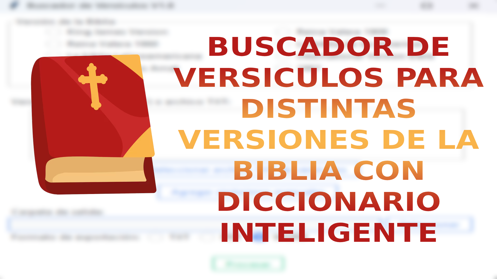
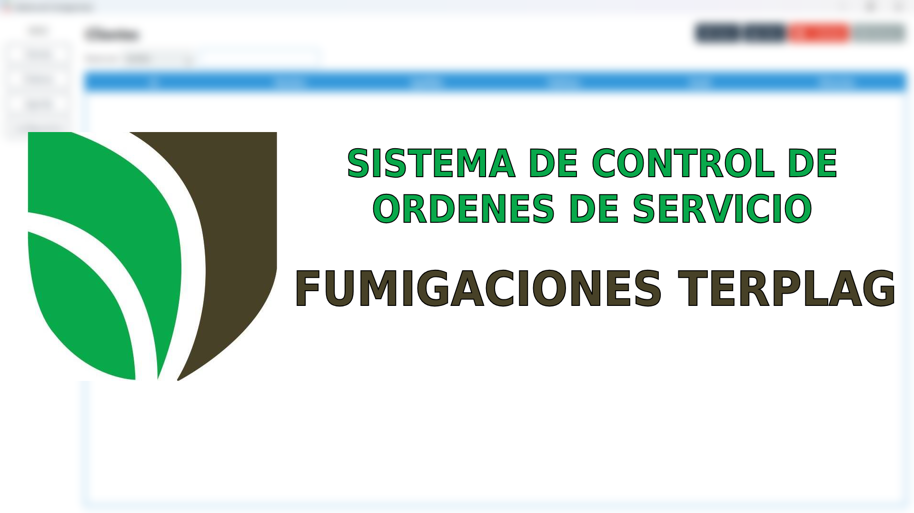
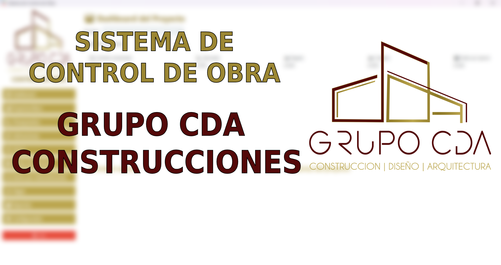
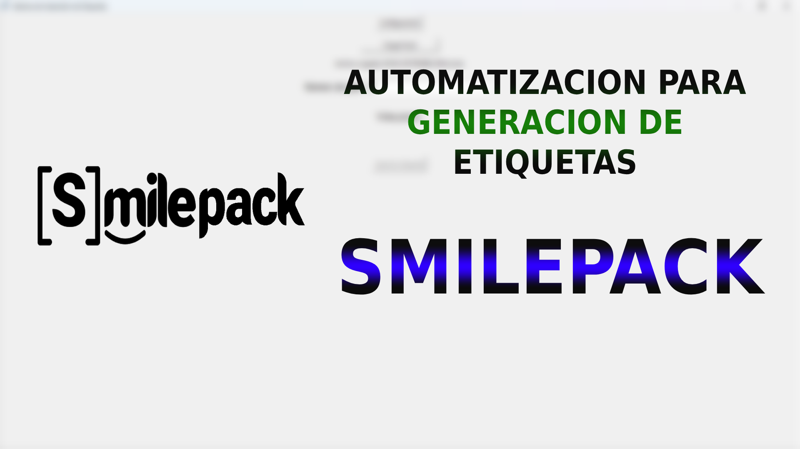
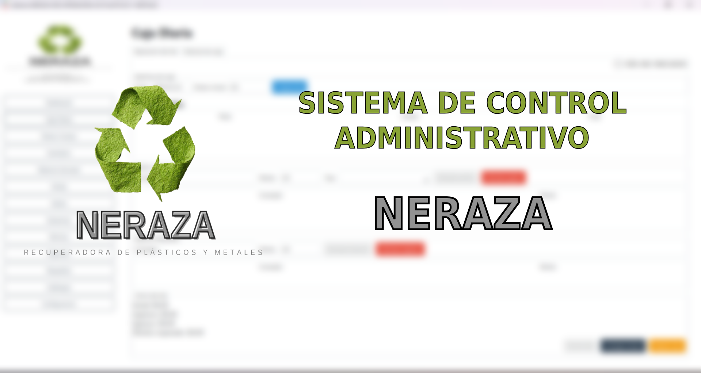
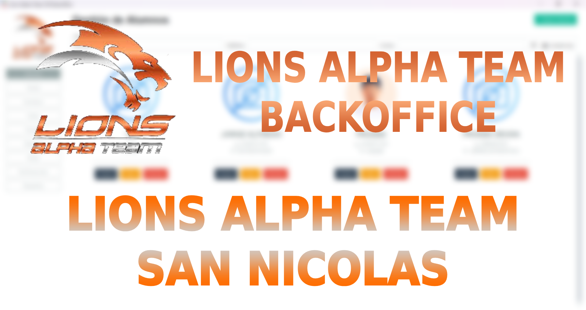
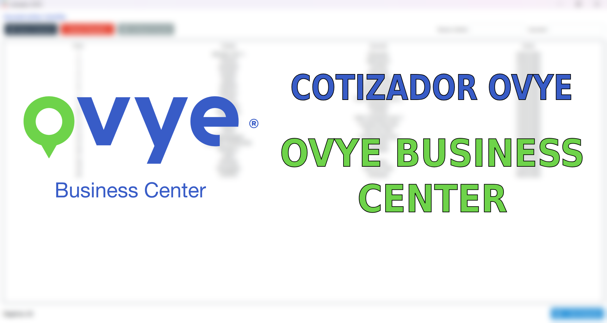
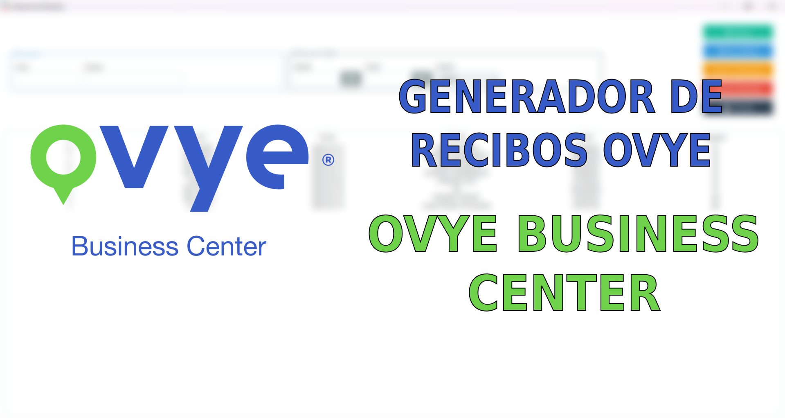

Marzo 2024 – Actual
Diciembre 2023 – Marzo 2024
Enero 2023 – Diciembre 2023

Buscador de versiculos con soporte para distintas versiones de la biblia, en donde se pueden importar listas de versiculos, y con formatos de exportacion en txt, word y PDF, con funciones para formar lista de ejercicios y Diccionario para reemplazar palabras.
Ver proyecto
Sistema para el control de clientes, ordenes de servicio, asi como recordatorios para un negocio de Fumigaciones con funciones avanzadas de recordatorios y exportacion de informacion en formato PDF y opcion para imprimir.
Ver proyecto
Sistema de Control de Obra para Grupo CDA Construcciones, donde se manejan contratos y presupuestos iniciales, estimaciones, manejo de extras, aditivas y deductivas en automatico, jornales y gente por administracion, gastos de materiales y reportes de avance de Obra con opciones para exportar a formatos de PDF y Excel, asi como para imprimir directo del sistema.
Ver proyecto
Programa para automatizar la generacion de etiquetas para cliente del giro de ultima milla, con parametros configurables donde se configura el excel donde se extrae la informacion, asi como el logotipo a imprimir, al escanear la guia, el programa manda a imprimir en automatico, agilizando el proceso de generacion de etiquetas.
Ver proyecto
Sistema para administrar la informacion relacionada con la recicladora NERAZA, como compra y venta de material, control de flujo de caja diaria, gestion de nomina, gastos, ganancias, notas de compra, y reportes dinamicos en base a la informacion ingresada.
Ver proyecto
Sistema para la gestion de un gimnasio de MMA para gestionar la informacion de alumnos, mensualidades activas y por vencer, control de inventario, registro de ventas e ingresos, control de caja, panel financiero, envio de mensajes y notificaciones por whatsapp.
Ver proyecto
Programa para generar cotizaciones en PDF en base a la informacion ingresada de manera dinamica controlada por sucursales.
Ver proyecto
Programa para generar recibos de pago de clientes activos en formato PDF en base a una plantilla definida, para tener el control de los pagos recibidos.
Ver proyecto